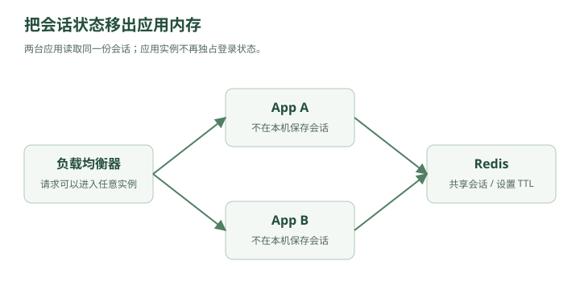

林默原本以为，加了负载均衡之后，系统终于稳定了。
现在架构是：
┌→ App A
用户 → Nginx ───┤
└→ App B
│
▼
MySQL
直到用户开始疯狂投诉：
“为什么我一会儿登录，一会儿又掉线？”
林默一查日志，发现问题正是上一章留下的那个坑。
用户第一次登录：
请求 → App A
于是：
App A 内存：
session_123 → user_9527
下一次请求却被 Nginx 发给：
App B
App B 一查：
session_123？
不存在。
于是：
401 Unauthorized
一、最简单的办法：你以后一直去 A
林默想了个办法。
“既然 Session 在 A，那这个用户之后的请求都发给 A 不就行了？”
老周点点头：
“可以。”
这叫：
Sticky Session
粘性会话。
比如负载均衡器记录：
user1 → App A
user2 → App B
user3 → App A
以后 user1 的请求始终：
→ App A
看起来解决了。
但老周问：
“App A 挂了呢？”
林默：
“……”
App A 一挂：
user1 的 Session
一起没了
而且可能出现：
App A：1万个用户
App B：100个用户
负载严重不均。
所以 Sticky Session 能用，但不是特别优雅。
二、第二种方案：大家复制一份
林默又想：
“那 A 有 Session 后，复制给 B。”
于是：
App A
│
├── session123
│
▼
复制
│
▼
App B
如果有三台机器：
A → B
A → C
那么大家都有：
session123 → user9527
这叫：
Session Replication
Session 复制。
但用户越来越多以后：
10万 Session
100万 Session
1000万 Session
每创建一个 Session：
A → B
A → C
A → D
A → E
大量网络同步。
如果有 100 台服务器呢？
林默脑补了一下：
一个 Session
复制 99 次
“这是不是有点蠢？”
老周：
“开始有架构师的味道了。”
三、第三种方案：把状态搬出去
老周重新画了一张图。

查看文字版示意
┌→ App A ─┐
用户 → LB ───────┤ │
└→ App B ─┤
▼
Redis
App A 和 App B：
都不保存 Session。
它们统一访问 Redis。
登录时：
SET session:123 user:9527
下一次请求到 A：
GET session:123
下一次请求到 B：
GET session:123
在 Redis 可用且会话未过期的前提下，两台应用能够查询同一份会话状态。
林默眼睛一亮：
“所以 Session 不属于某一台服务器了。”
“对。”
这就是大型系统里一个非常重要的思想：
无状态服务
Stateless Service。
四、什么叫无状态？
假设 App A 收到请求。
如果处理这个请求需要的信息都在：
请求本身
+
共享存储
而不是：
App A 自己的内存
那么这个 App 就可以认为是无状态的。
于是：
请求1 → A
请求2 → B
请求3 → C
都无所谓。
这件事极其重要。
因为只有无状态，你才可以非常轻松地：
2台服务器
↓
10台
↓
100台
↓
1000台
服务器不够？
加。
服务器坏了？
删。
服务器升级？
替换。
不需要担心：
“用户数据是不是存在某一台机器里？”
所以你以后看到 Kubernetes、容器、自动扩缩容时，会发现一个共同前提：
应用服务最好无状态。
五、Redis 第一次正式进入系统
林默开始研究 Redis。
然后发现一个奇怪的事情。
Redis 数据主要放在：
内存
而 MySQL 数据主要放在：
磁盘
林默问：
“为什么 Session 不直接放 MySQL？”
当然可以。
比如：
SELECT user_id
FROM session
WHERE session_id = '123';
但是问题在于：
每个请求都需要认证。
假设：
10000 QPS
意味着可能：
每秒 10000 次 Session 查询
这些请求全部打到 MySQL。
而 Session 查询本身又非常简单：
key → value
例如：
session:123
↓
user:9527
并不需要复杂 SQL。
所以用一个擅长：
高频
简单
Key-Value
内存访问
的系统更合适。
Redis 就很适合这种工作。
六、Redis 不只是拿来存 Session
几周后。
另一个事故来了。
首页有一个接口：
GET /user/9527
查询：
SELECT *
FROM user
WHERE id = 9527;
平时没什么问题。
但是某个大主播火了。
100 万人疯狂打开他的主页。
数据库里不断执行：
SELECT *
FROM user
WHERE id = 9527;
SELECT *
FROM user
WHERE id = 9527;
SELECT *
FROM user
WHERE id = 9527;
SELECT *
FROM user
WHERE id = 9527;
数据每次都完全一样。
林默看着 MySQL CPU：
92%
95%
97%
突然感觉哪里不对。
“100 万个人查同一个东西，我为什么要让 MySQL 查 100 万次？”
老周：
“终于问到缓存真正的核心问题了。”
七、缓存出现
第一次查询：
用户
↓
Redis
↓
没有
↓
MySQL
↓
查到数据
↓
写入 Redis
Redis：
user:9527
=
{
name: "林某某",
avatar: "...",
followers: 10000000
}
之后：
用户
↓
Redis
↓
直接返回
于是原来：
10000 QPS
全部 → MySQL
变成：
10000 QPS
│
├── 9900 → Redis
│
└── 100 → MySQL
数据库压力瞬间下降。
林默第一次真正理解：
Redis 最核心的价值之一，不是“快”这么简单。
而是：
替后面的慢系统挡请求。
八、缓存的本质
老周问：
“为什么 Redis 可以做缓存？”
林默说：
“因为它快。”
“还不完整。”
老周画：
CPU Cache
↓
内存
↓
SSD
↓
机械硬盘
↓
远程服务
计算机系统里大量设计都有同一个规律：
把常用的数据放到离使用者更近、更快的地方。
比如 CPU：
寄存器
L1
L2
L3
内存
磁盘
Web 系统也是：
浏览器缓存
↓
CDN
↓
Nginx
↓
Redis
↓
MySQL
这和内存层级的思路相似：尽量把热门数据放在离使用者更近的位置。不过，浏览器、CDN、Redis 与数据库的延迟、容量和成本取决于实际部署，不能直接套用 CPU 缓存的价格与容量关系。
所以缓存不是 Redis 专属概念。
Redis 只是：
分布式系统里非常常见的一层缓存。
九、Cache Aside
林默于是写出了经典代码。
查询：
User user = redis.get("user:" + id);
if (user == null) {
user = mysql.selectUser(id);
redis.set("user:" + id, user);
}
return user;
这叫：
Cache Aside Pattern
旁路缓存。
流程：
读：
先 Redis
↓
有 → 返回
没有
↓
查 DB
↓
写 Redis
↓
返回
这是面试中最常见的缓存模式之一。
林默觉得：
“这也不难。”
老周看了他一眼。
“系统设计里最危险的时刻，就是你觉得问题解决了的时候。”
十、一个不存在的用户
某天有人恶意请求：
GET /user/999999999
数据库中根本没有这个用户。
流程：
Redis
↓
没有
↓
MySQL
↓
也没有
下一次：
Redis
↓
还是没有
↓
MySQL
因为：
不存在的数据
没有被缓存
攻击者开始不断随机请求：
/user/111111111
/user/222222222
/user/333333333
...
Redis 全部 Miss。
请求全部穿过去：
攻击者
↓
Redis
↓
Redis 没有
↓
MySQL
Redis 仿佛不存在一样。
数据库开始冒烟。
老周在白板写下四个字：
缓存穿透
Cache Penetration。
核心特点：
请求的数据，缓存没有，数据库也没有。
所以每一次请求都会穿过缓存。
十一、怎么解决缓存穿透？
最简单的方法：
即使没查到，也缓存。
比如：
user:99999999 → NULL
设置一个较短 TTL：
60 秒
于是：
第一次：
Redis Miss
↓
DB Miss
↓
Redis 写 NULL
后面请求：
Redis Hit(NULL)
不用继续打 DB。
这叫：
缓存空值
但是如果攻击者每次随机生成新 ID：
111
222
333
444
...
还是没用。
于是另一个东西出现：
Bloom Filter
布隆过滤器。
十二、城门口的名单
你可以把 Bloom Filter 想象成：
数据库城堡外面的门卫。
数据库中现有：
user1
user2
user3
...
user1000000
门卫拿着一份特殊名单。
请求：
user9527
门卫检查：
“可能存在。”
放进去。
请求：
user999999999999
门卫：
“一定不存在。”
直接拒绝。
于是：
请求
↓
Bloom Filter
↓
一定不存在 → 返回
↓
可能存在
↓
Redis
↓
MySQL
为什么叫“可能存在”？
因为布隆过滤器有一个特点：
它说不存在
→ 一定不存在
它说存在
→ 可能存在
存在一定概率误判。
但用很小的空间，可以表示海量数据。
工程补充：“一定不存在”针对的是已经加入且未被错误删除的集合。若新增记录还没同步到过滤器，就可能误挡真实数据；需要设计更新顺序、故障回退和重建机制。缓存空值也应使用可区分的占位值，并设置短 TTL。
十三、第二场缓存灾难
某天，一个明星发动态。
他的用户信息正好缓存在 Redis：
user:9527
TTL：
3600 秒
晚上 8 点整。
这个 Key 过期了。
与此同时：
10 万用户
刚好一起刷新他的主页。
瞬间：
100000 请求
↓
Redis
↓
全部 Miss
↓
MySQL
数据库：
？？？？？
刚才缓存还帮数据库挡住所有请求。
结果 Key 一过期：
所有请求瞬间打穿。
老周写：
缓存击穿
Cache Breakdown / Hot Key Expiration。
核心：
某一个热点 Key 失效，大量请求同时访问数据库。
注意和穿透不同。
穿透：
数据本来就不存在
击穿：
数据存在
而且特别热
但缓存突然失效
十四、互斥锁
解决思路之一：
当 Redis Miss 时，不让 10 万请求一起查询数据库。
只有一个请求获得锁。
100000 个请求
↓
锁
↓
只有 1 个进去
↓
MySQL
↓
写回 Redis
其他请求：
等待
然后：
重新查询 Redis
伪代码：
// 示意代码：具体 API 由 Redis 客户端与业务实现提供
for (int attempt = 0; attempt < MAX_RETRIES; attempt++) {
data = cache.get(key);
if (data != null) return data;
token = randomUniqueToken();
if (tryLock(lockKey, token, LOCK_TTL)) {
try {
data = cache.get(key); // 获锁后再次检查
if (data == null) {
data = db.query();
cache.set(key, encodeNullIfNeeded(data), CACHE_TTL);
}
return data;
} finally {
compareAndDelete(lockKey, token); // 原子校验归属再释放
}
}
boundedBackoff(attempt);
}
return fallbackOrReject();
这就是：
Mutex / Distributed Lock
互斥锁 / 分布式锁。
工程补充：锁的创建和 TTL 设置必须原子完成，释放时需原子比较唯一 token，避免删掉别人的锁。租约过期仍可能产生并发执行；缓存重建允许怎样的重复、是否需要版本控制，要按业务确定。涉及严格资源写入时，还要考虑第八章的栅栏令牌。
十五、第三场灾难更加恐怖
系统里有：
100万个缓存 Key
林默当初写代码时特别整齐：
TTL = 1小时
上线时间：
20:00
于是大量缓存：
21:00
一起过期。
Redis 瞬间失去大量数据。
原本 Redis 每秒挡住：
100000 请求
突然全部转发给 MySQL。
MySQL 直接挂掉。
接着：
App 查询 DB 超时
↓
线程大量阻塞
↓
连接池耗尽
↓
App 也挂
整个系统雪崩。
老周写：
缓存雪崩
Cache Avalanche。
特点：
大量缓存同时失效。
十六、穿透、击穿、雪崩终于可以不背了
林默在白板上画：
穿透：
请求一个不存在的数据
Redis ❌
DB ❌
请求一直穿过去
击穿：
一个超级热点 Key
Redis Key 刚好过期
↓
大量请求
↓
DB
雪崩：
大量 Key 同时过期
Redis 大面积失效
↓
海量请求
↓
DB
所以：
| 问题 | 本质 |
|---|---|
| 缓存穿透 | 查不存在的数据 |
| 缓存击穿 | 单个热点 Key 失效 |
| 缓存雪崩 | 大量 Key 同时失效 |
解决思路也就自然了：
穿透
→ 缓存空值
→ Bloom Filter
击穿
→ 互斥锁
→ 热点数据不过期/逻辑过期
雪崩
→ TTL 加随机值
→ 多级缓存
→ 限流降级
十七、Redis 自己挂了怎么办？
林默突然想到一个严重问题。
现在系统：
┌→ App A ─┐
用户 → LB ────────┤ │
└→ App B ─┤
▼
Redis
│
▼
MySQL
所有人都依赖 Redis。
如果 Redis 挂了呢？
老周：
“恭喜。”
“什么？”
“你成功制造了新的单点故障。”
林默：
“……”
上一章他们刚解决：
App 单点
这一章又创造：
Redis 单点
所以系统设计的故事经常就是这样：
解决一个瓶颈，然后发现新的瓶颈。
Redis 也不能只有一台。
于是下一步就会出现：
Redis 主从复制
Redis Sentinel
Redis Cluster
但这还不是最恐怖的。
因为真正的大 Boss 此时还静静躺在后面：
MySQL
现在虽然 App 有很多台：
App1
App2
App3
App4
...
Redis 也可以做集群。
可是所有真正的数据最后还是：
↓
MySQL
老周指着架构图最下面。
“林默。”
“嗯？”
“如果 MySQL 扛不住怎么办？”
林默沉默了一会儿。
然后发现：
他们下一场战争，终于要进入数据库了。
第二章结束
现在整个系统已经从：
用户
↓
App
↓
MySQL
进化成：
┌→ App A
用户 → Load Balancer ─┼→ App B
└→ App C
│
▼
Redis
│
▼
MySQL
你也已经自然走过：
分布式 Session
↓
无状态服务
↓
Redis
↓
缓存
↓
Cache Aside
↓
缓存穿透
↓
Bloom Filter
↓
缓存击穿
↓
分布式锁
↓
缓存雪崩
真正需要形成的系统设计直觉是：
不要先问“Redis 有哪些用途”。
而要问：
为什么系统发展到这里之后，我们不得不引入 Redis？
下一章就是：
下一章：数据库开始冒烟——MySQL 主从复制与读写分离
到这一章会进入一个特别重要的系统设计阶段：
为什么一台 MySQL 不够 → 为什么要主从 → 为什么读写分离 → replication lag 是什么 → 主库挂了怎么办 → 为什么最终还会走向分库分表。